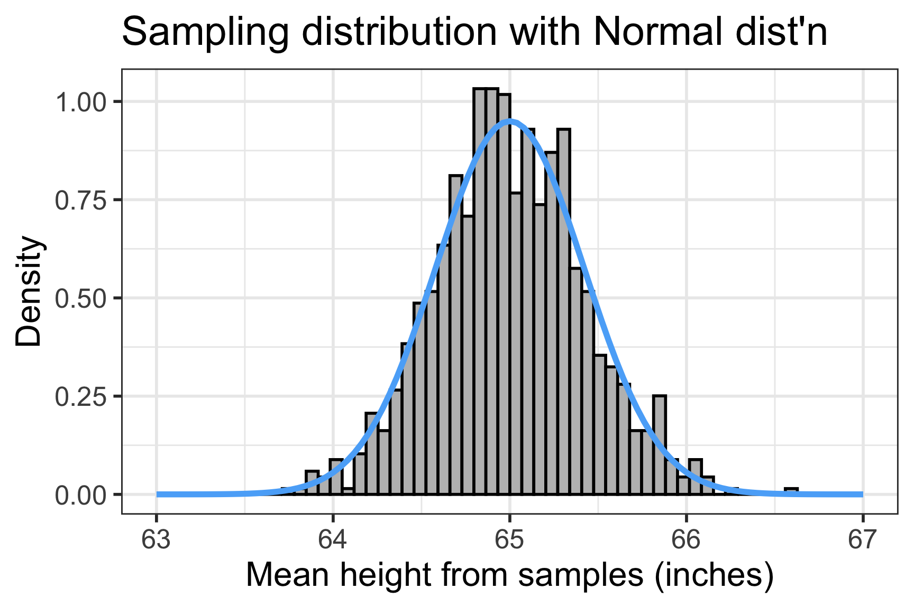
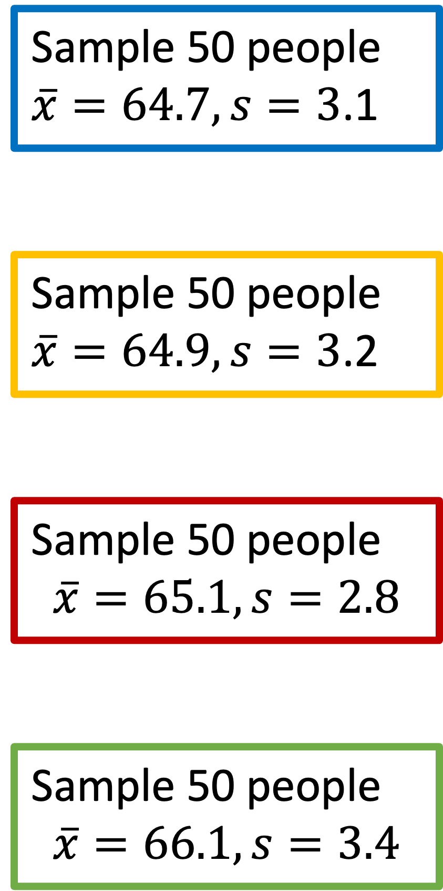
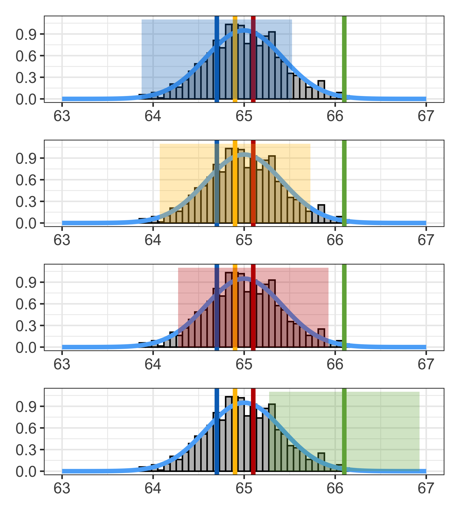
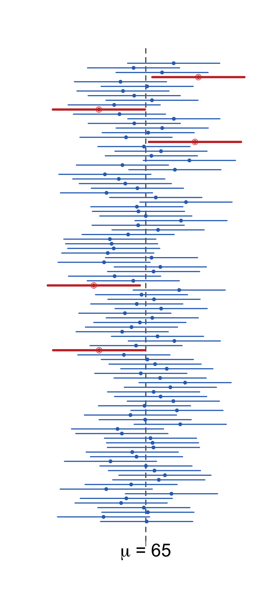
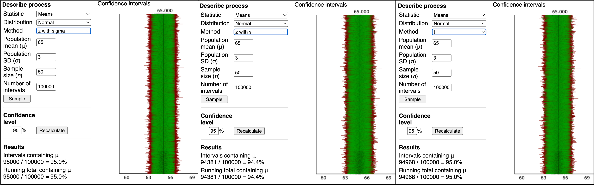
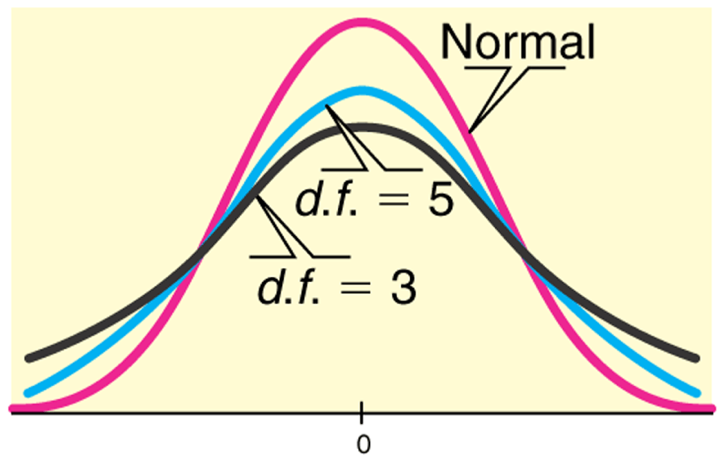

Warning: Removed 2 rows containing missing values or values outside the scale range
(`geom_bar()`).
TB sections 4.2

Warning: Removed 2 rows containing missing values or values outside the scale range
(`geom_bar()`).
Warning: Using `size` aesthetic for lines was deprecated in ggplot2 3.4.0.
ℹ Please use `linewidth` instead.Warning: The dot-dot notation (`..density..`) was deprecated in ggplot2 3.4.0.
ℹ Please use `after_stat(density)` instead.Warning: Removed 2 rows containing missing values or values outside the scale range
(`geom_bar()`).
\[\overline{X} \sim \text{Normal}\big(\mu_{\overline{X}}=65, SE = 0.424 \big)\]
The sampling distribution is the distribution of sample means calculated from repeated random samples of the same size from the same population
It is useful to think of a particular sample statistic as being drawn from a sampling distribution
With CLT and \(\overline{X}\) as the RV for the sampling distribution
Warning: Removed 2 rows containing missing values or values outside the scale range
(`geom_bar()`).
\[ \mu_{\overline{X}} = 65 \text{ inches}\] \[ SE = 0.424 \text{ inches}\]
Warning: Removed 2 rows containing missing values or values outside the scale range
(`geom_bar()`).
A point estimate consists of a single value
An interval estimate provides a plausible range of values for a parameter
We can create a plausible range of values for a population mean (\(\mu\)) from a sample’s mean \(\overline{x}\)
A confidence interval gives us a plausible range for \(\mu\)
Confidence intervals take the general form: \[\big(\overline{x} - m, \overline{x} + m \big) = \overline{x} \pm m\]

Warning: Removed 2 rows containing missing values or values outside the scale range
(`geom_bar()`).
Removed 2 rows containing missing values or values outside the scale range
(`geom_bar()`).
Removed 2 rows containing missing values or values outside the scale range
(`geom_bar()`).
Removed 2 rows containing missing values or values outside the scale range
(`geom_bar()`).
Do these confidence intervals include \(\mu\)?
Confidence interval for \(\mu\)
\[\overline{x}\ \pm\ z^*\times \text{SE}\]
When can this be applied?
R to calculate \(z^*\) for any desired CIqnorm(p = 0.975)[1] 1.959964Example 1: Using our green sample from previous plots
For a random sample of 50 people, the mean height is 66.1 inches. Assume the population standard deviation is 3 inches. Find the 95% confidence interval for the population mean.
\[ \begin{aligned} \overline{x} \pm \ & z^* \times \text{SE} \\ \overline{x} \pm \ & z^* \times \dfrac{\sigma}{\sqrt{n}} \\ 66.1 \pm \ & 1.96 \times \dfrac{3}{\sqrt{50}} \\ 66.1 \pm \ & 0.8315576 \\ (66.1 - 0.8315576, & \ 66.1 + 0.8315576)\\ (65.268, & \ 66.932)\\ \end{aligned} \]
We are 95% confident that the mean height is between 65.268 and 66.932 inches.
Simulating Confidence Intervals: http://www.rossmanchance.com/applets/ConfSim.html
The figure shows CI’s from 100 simulations:
What percent of CI’s captured the true value of \(\mu\)?
Loading required package: airportsLoading required package: cherryblossomLoading required package: usdata
Attaching package: 'openintro'The following objects are masked from 'package:moderndive':
babies, evals
Actual interpretation:
What we typically write as “shorthand”:
WRONG interpretation:
Simulating Confidence Intervals: http://www.rossmanchance.com/applets/ConfSim.html

In real life, we don’t know what the population sd is ( \(\sigma\) )
If we replace \(\sigma\) with \(s\) in the SE formula, we add in additional variability to the SE! \[\frac{\sigma}{\sqrt{n}} ~~~~\textrm{vs.} ~~~~ \frac{s}{\sqrt{n}}\]
Thus when using \(s\) instead of \(\sigma\) when calculating the SE, we need a different probability distribution with thicker tails than the normal distribution.
Instead, we use the Student’s t-distribution

Confidence interval for \(\mu\)
\[\overline{x}\ \pm\ t^*\times \text{SE}\]
When can this be applied?
qt gives the quartiles for a t-distribution. Need to specify
qt(p = 0.975, df=9) #df = n-1[1] 2.262157qt(p = 0.975, df=49)[1] 2.009575qt(p = 0.975, df=99)[1] 1.984217qt(p = 0.975, df=999)[1] 1.962341Example 2: Using our green sample from previous plots
For a random sample of 50 people, the mean height is 66.1 inches and the standard deviation is 3.5 inches. Find the 95% confidence interval for the population mean.
\[ \begin{aligned} \overline{x} \pm \ & t^* \times \text{SE} \\ \overline{x} \pm \ & t^* \times \dfrac{s}{\sqrt{n}} \\ 66.1 \pm \ & 2.0096 \times \dfrac{3.5}{\sqrt{50}} \\ 66.1 \pm \ & 0.994689 \\ (66.1 - 0.994689, & \ 66.1 + 0.994689)\\ (65.105, & \ 67.095)\\ \end{aligned} \]
What is \(t^*\)? \[df = n-1 = 50-1=49\] \(t^* =\) qt(p = 0.975, df = 49) \(= 2.0096\)
We are 95% confident that the mean height is between 65.105 and 67.095 inches.
Case 1: We know the population standard deviation
\[\overline{x}\ \pm\ z^*\times \text{SE}\]
qnorm(p = 0.975) \(=1.96\)Case 2: We do not know the population sd
\[\overline{x}\ \pm\ t^*\times \text{SE}\]
qt(p = 0.975, df = n-1)